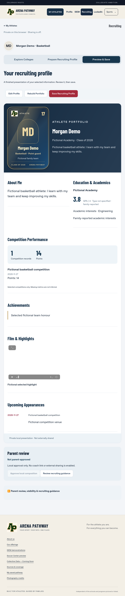

Baseline bbdd9fcef548560842238344719d514ad8ba1a65. All subjects are fictional. Images are actual browser captures, not reconstructed proposals. Click for full resolution. Founder acceptance remains pending. Report · functional/visual matrix · Soccer Center reference
Parent athlete card
Same family-gallery entry; the requested original gold identity replaces the former generic gradient card. Names/data differ between fresh fictional sessions and are not claimed as identical stored fixtures.
Full athlete profile
Shared gold identity is the profile foundation. Existing story, education, results/media/calendar and focused editing remain. Supplied fictional information is labeled, not manufactured as verified facts.
Recruiting entry
Four text-first progress destinations/teaser become one identity-led entry with three destinations. No legacy checklist/template/preview container is constructed.
Before / preceding state After / resulting state
After / resulting state
Actual portfolio during preparation
Left is the committed actual bbdd-era builder capture, not a mockup. The completed portfolio is now the main preparation surface; choices are one focused editor panel, not a clipped preview beyond a long control page.
Finished coach-facing presentation
Comparable fictional qualification fixtures: same conditional content hierarchy and selected media, now using the shared collectible identity. Save/Edit/Rebuild and local parent review remain explicit.
Saved and reopened result
Actual UI sequence: finished preview → explicit Save → another pillar → return and reload. Original IDs and saved timestamp are asserted.
Composition editor / full portfolio
One native responsive content panel edits the same composition. The full result is visible on the primary page after closing it. Selection focus and scroll are preserved; this is not another recruiting application.
Four sports, one implementation
Lacrosse — actual finished portfolio Basketball — actual finished portfolio
Basketball — actual finished portfolio
Volleyball — actual finished portfolioSwimming — actual finished portfolio Actual phone and landscape